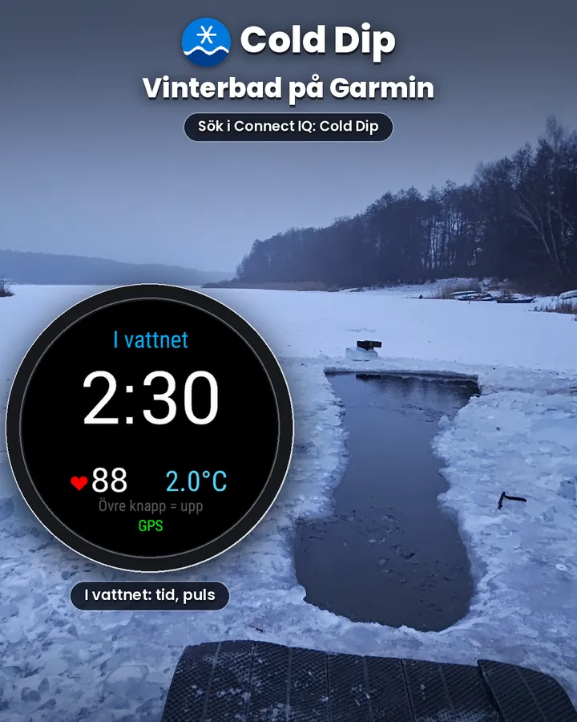
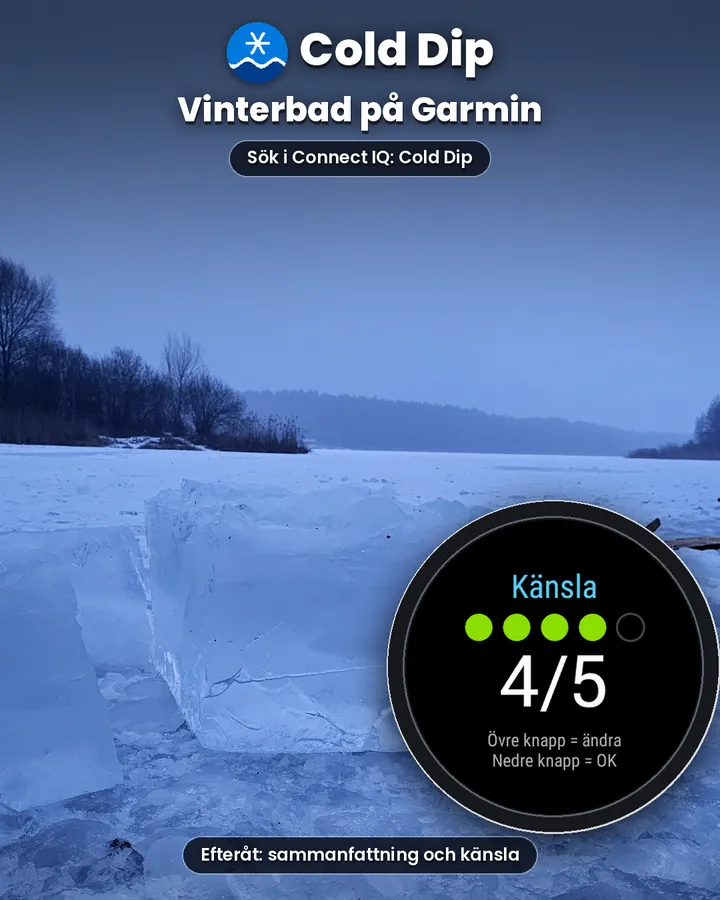
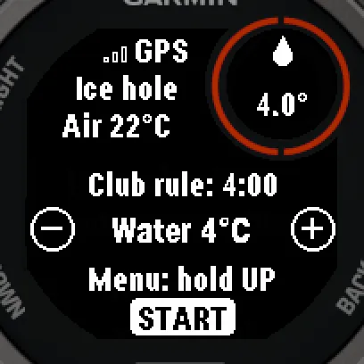
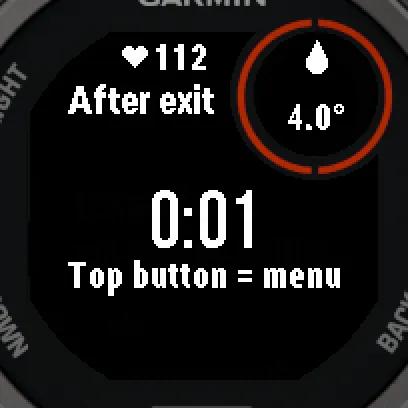

Före / i vattnet / efter
Övre knappen byter fas. Tiden i vattnet bara fortsätter räkna — appen säger aldrig åt dig att gå upp. Det bestämmer du. Föregående tid är bara en referens, inte ett mål du måste slå.
På klockan heter appen Vinterbad.
Vinterbad och kallbad sparade på riktigt — inte som simning.
Eller sök efter ”Cold Dip” i Connect IQ-appen i telefonen.



Gjort för vinterbad, inte för bassäng. Du bestämmer hela tiden.
Övre knappen byter fas. Tiden i vattnet bara fortsätter räkna — appen säger aldrig åt dig att gå upp. Det bestämmer du. Föregående tid är bara en referens, inte ett mål du måste slå.
Pulsen spelas in hela tiden. Vattentemperaturen skriver du in manuellt och den sparas med aktiviteten.
Lufttemperatur, känns som och vind — från Garmin-vädret i din telefon.
Platsen för badet sparas och visas på en karta i Garmin Connect.
Efter varje bad en snabb bedömning av hur du mår. Dessutom pulstopp och återhämtning samt Body Battery och stress innan du gick i.
Allt sparas i Garmin Connect som en egen aktivitet, inte som simning.
Engelska, polska, tyska, tjeckiska, slovakiska, finska, norska, svenska, spanska, ryska och ukrainska. Appen följer automatiskt klockans språk.
Forerunner, Fenix, Epix, Enduro, Venu, Vivoactive, Instinct 2 / 3 / E / Crossover och fler. Stöds inte på mycket gamla klockor som Forerunner 920XT (Connect IQ 1.x).
Sök efter din modell. Listan stämmer med de 133 klockorna i Cold Dip 1.0.3.
Mycket gamla klockor med Connect IQ 1.x, som Forerunner 920XT, kan inte stödjas.
Så ser Cold Dip ut på olika Garmin-skärmar.







De senaste versionerna av Cold Dip.
133 klockor, inklusive Instinct 2, Instinct 2S, Instinct 2X, Instinct 3 Solar, Instinct E och Instinct Crossover, plus en ny svartvit layout för MIP-skärmar.
126 klockor, inklusive Forerunner 55.
105 klockor, inklusive rektangulära layouter för Venu X1 och Venu Sq 2.
Första utgåvan.
“Działa idealnie” (Fungerar perfekt)
Över 10 minuter vid 5°C — vattentemperatur på klockan, och all data sparad i Garmin Connect.
Några saker folk ofta frågar om efter installationen.
Installera den från Connect IQ Store-appen i telefonen — inte från Google Play eller App Store. På klockan hittar du Cold Dip (Vinterbad) i listan över aktiviteter / appar.
I profilen ”Vak” ställer du in den med knapparna − / + på startskärmen. I andra profiler görs det via menyn: ”Vattentemp. manuellt”. Om du ser ”--°C” i vattnet har temperaturen inte ställts in ännu.
Öppna aktiviteten, gå till fliken ”Statistik” och scrolla ner till avsnittet ”Connect IQ”. Där finns puls, vattentemperatur, väder, känsla och tiderna för varje fas. Rutorna på skärmen ”Översikt” sätts av Garmin — appen kan inte ändra dem.
Nej. Klockan kan inte mäta kroppstemperatur. Sensorn visar klockans egen temperatur, som påverkas av huden och luften. I Cold Dip skriver du in vattentemperaturen manuellt.
Kalorierna uppskattas av klockan utifrån pulsen, de räknas inte av Cold Dip.
Kallt vatten är allvar. Det här är allmänna säkerhetspåminnelser, inte medicinska råd. Du bestämmer när du går i och när du går upp.
Gå alltid tillsammans med någon som kan hjälpa om något händer, eller se till att någon på land håller koll på dig.
Om du är ny i kallt vatten, vänj dig successivt i stället för att börja med ett långt bad i mycket kallt vatten.
Många börjar med bara kort tid i vattnet och ökar långsamt. Det finns ingen tid du “bör” hålla ut.
Lämna vattnet så snart du känner att du bör — kraftiga frossa, smärta, domningar, förvirring, eller bara en känsla av att det räcker. Cold Dip säger aldrig åt dig att gå upp, och sätter aldrig en måltid. Din senaste tid är bara en referens.
Torka dig och värm upp så snart du kan efter att du gått upp. Ha varma kläder redo innan du går i.
När du har gått upp kan kroppstemperaturen i kärnan fortsätta sjunka en stund när kallare blod kommer tillbaka från hud och armar och ben. Det kallas ofta afterdrop. Fortsätt värma upp, ta det lugnt och vänta tills du mår bra innan du kör eller cyklar.
Cold Dip är en registreringsapp, inte en medicinteknisk produkt, och ger inte medicinska råd. Den kan inte säga om det är säkert för dig att gå i kallt vatten. Har du ett hälsotillstånd, är du gravid, eller är du osäker, tala först med en kvalificerad yrkesperson.
En kort titt på ett bad, från startskärmen till sparandet i Garmin Connect.
Har du en idé till en Garmin-app eller en urtavla? Då gör vi den tillsammans. Skriv till mig och berätta vilken klocka du använder.
Om du redan använder Cold Dip hjälper ett omdöme i Connect IQ mycket — tack!
Cold Dip är gratis. Om den hjälper dina bad kan du stötta arbetet bakom den.
Bjud på en kaffe